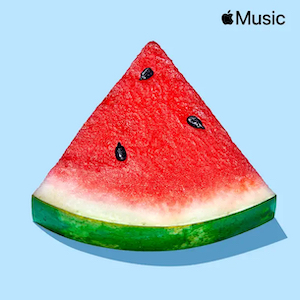
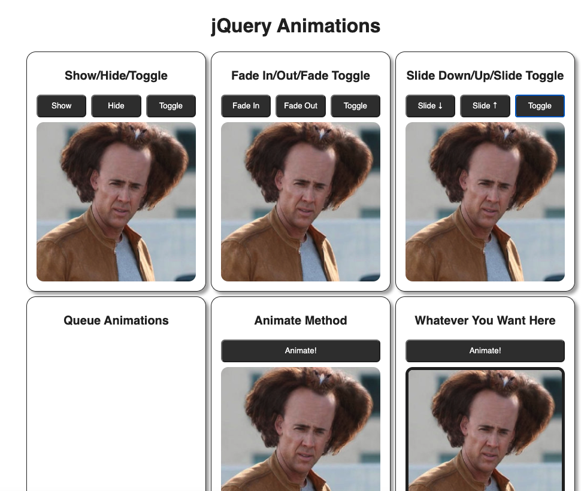
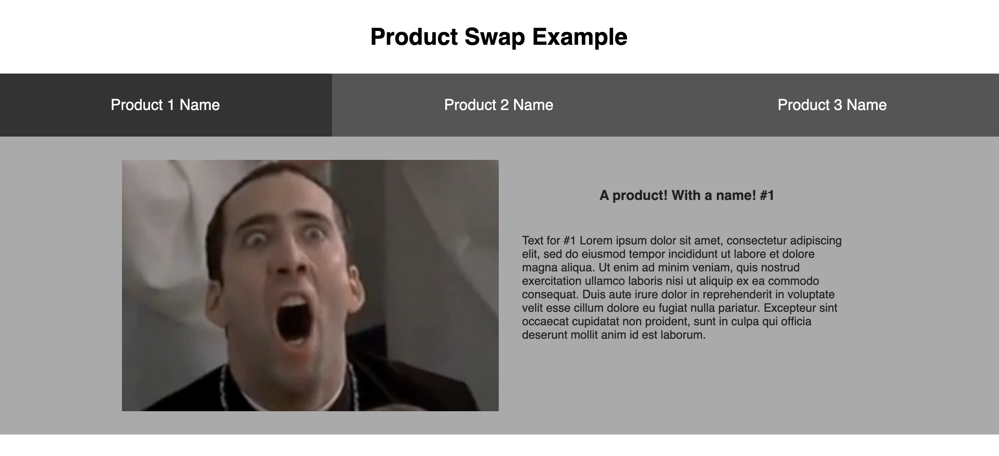

Welcome!
Stressed out? Need to take some time for yourself (or just waste some time and relax)? Below, you will find suggestions for things you can listen to or participate in solely for fun! Find a silly and upbeat playlist, pick up a new relaxing hobby, or get outside and enjoy the (not very) fresh air.
These are my hobbies, but this isn't a list of all hobbies, so if none of these sound like fun to you, hit up Google to find more. Listen to that potato in the Upside-Down. They know what they're talking about. (it me)
Have fun, and try to relax!
Get Outside
Not sure what you can enjoy when the weather is nice? Try some of the suggestions below. If you choose not to allow location services, the weather shown will be for Phoenix, AZ.
What To Do?
Listen to Music
These are some of my favorite playlists in Apple Music. I usually listen to upbeat playlists with pop music or classic rock and alternative playlists. Some playlists are music only, but others are actually a playlist of music videos you can watch along with your music. They're fun to put on at parties because so many of my friends remember when we used to see those on an entire T.V. channel.
Search online for playlists that you enjoy. While some services require that you pay for membership (Apple Music, Spotify Premium), not all do (Pandora, Spotify with ads, etc). There are also a lot of music playlists on YouTube for free. Choose more than one so that you have music to listen to no matter what you're doing: studying, cleaning, relaxing, etc. Music can make a big difference in your mood!
80's Video Hits
- Artists:
- Madonna, Duran Duran, Wham!...
Family Pop
- Artists:
- Harry Styles, Imagine Dragons, The Weeknd...
Feeling Happy
- Artists:
- Neon Trees, Vance Joy, Vampire Weekend...
Game Night
- Artists:
- The Beatles, Queen, Glass Animals...
Karaoke Hits Essentials
- Artists:
- ABBA, Dolly Parton, Rick Astley...
90's Video Hits
- Artists:
- The Prodigy, Spice Girls, Marky Mark and the Funky Bunch...
Party Starters
- Artists:
- Lizzo, Miley Cyrus, Doja Cat...
Pure Party
- Artists:
- Flo Rida, Post Malone, Surfaces...
Solid Gold Hits
- Artists:
- The Rolling Stones, Bon Jovi, The Cure...
Summer BBQ
- Artists:
- Weezer, Lil Nas X, Childish Gambino...
Enjoy Your Hobbies
Do I have too many hobbies? Possibly. But I am also never bored or lacking for things I can do for fun! Now that I teach, I have less time than I used to for hobbies. That doesn't mean that I don't still enjoy them whenever I can. Hobbies can be a great escape, or just a chance to do something different and fun. Consider what your friends do for hobbies, or see if there are other hobbies and meetups related to hobbies you're interested in learning more about!
Click on any of the headings below to read more about these hobbies.
Reading
There's no doubt that reading is and always has been my favorite escape from reality. From the time I found out that Pet Sematary was based on an actual book in fifth grade (no. I had no idea until a friend told me), I have been collecting, borrowing, and reading anything I could get my hands on.
You can find books to borrow from your local or school library, find them at garage sales, borrow from friends, or search for free titles through different reading apps.
My current reading list basically consists of a bunch of romance novels. I can zone out and enjoy, even if I miss a plot point or two. This work out in the end.
Last year I read a total of 226 books through Kindle Unlimited (and I didn't track the physical books I read).
As of November 20, 2022, I have read a total of 156 books through Kindle Unlimited. Not quite a record, but not bad considering that I read while I'm eating and before bed for the most part because I am busy the rest of the time.
Sewing
I have been sewing since I was little. I like being able to make things for myself (especially when I can't afford to buy them but can make them instead). Being able to see something, find or create a pattern for it, then put it together to make something nicer than you could ever afford is a great feeling!
I have made countless pillows curtains, articles of clothing for myself and others, as well as clothing for my dolls (but only when I was little. I don't have dolls anymore).
Look for sewing classes offered at craft or fabric stores. While some might be meant for someone more advanced, they usually offer options for beginners, and you can find a sewing machine at a garage sale or online for affordable prices, or can use a maker space that offers sewing machines.
Baking
Baking is another hobby that I have had for a LONG time. I started when I was little. I wasn't really allowed to help my mom with baking, but I could watch and see what she did. When I got older, I was allowed to bake, and I got to try different recipes and ingredients for fun. My chocolate chip cookies got rave reviews.
When my twins were about two years old, I enrolled in the Wilton Method cake decorating courses at Michael's and really started baking. I would sometimes sell cakes and cupcakes to customers, but people like to not pay for things so that got old pretty fast. While I was learning and practicing I wanted to practice on real cakes, so I was baking about three cakes a week to practice on. My husband and I were the ones eating them, and we gained 10 pounds each in the first month that I took a class. Whoops.
Quilting
I started sewing when I was little, but didn't start quilting until I was in high school. I think it was just that I loved wedding ring quilts, so I thought I'd see what I could do to teach myself some quilting. This was not the best idea, but I still enjoy quilting.
I finally got to take a real quilting course in my 30's through a fabric and crafts store, and learned a lot of things I wouldn't have figured out on my own. I definitely recommend taking some sort of course or watching tutorials to get started if you're interested in perfection. But if you're like me, you learn that perfection isn't necessary if you pick the right patters, and people who don't quilt won't notice the difference.
Scrapbooking
Scrapbooking is one of the hobbies that I have participated in the longest, and it introduced me to some great friends and opportunities to travel and teach. I started with card and invitation making after having my oldest, and went all in while I was pregnant with my twins.
Joining online communities of scrapbookers helped me to get to know some women that I am still friends with today. I found a lot of inspiration and learned a lot of new skills and techniques that came in handy when I changed majors to graphic information technology as a student (I feel very comfortable with understanding paper weight, print processes and things like embossing).
This is another hobby you can pick up in classes at your local craft stores or parks and recreation department. You can also just search online for communities to join and learn by seeing how others approach their pages and layouts.
Jewelry Making
I've never taken a jewelry class, but like most of my hobbies, that hasn't stopped me from making stuff. This is a hobby that can be a lot of fun, or a little annoying (depending on the kind of jewelry you're making and how much of a perfectionist you are). I found that if I made things where I had less strict ideas of how I wanted them to look I enjoyed it more.
Jewelry making courses are generally offered through local craft stores, beading stores, or parks and recreation departments. Some fine arts programs offer them too, but they're more metalsmithing than beading (although both are very fun).
Painting
I have some very talented family members that can paint, but I have never been very good at it. That doesn't stop me though, and the only way to get better at something is to practice, so I am not afraid to try out some new painting project.
My most recent (and still incomplete) project is a painting of Zapp Brannigan from Futurama on mint-colored velour for my office. It is ridiculous and I love it. I'm hoping to finish it this winter.
Find painting classes as your local arts and crafts or art supply store. You can also check local community colleges and your town's parks and recreation department or local arts centers.
Crafts
The things listed above aren't the only kinds of things I make. I have also learned a lot of other hobbies for fun (and for decorating my house when I was a single mom with a $0 budget).
EmbroideryI have made wall hangings, pillows, scarves, and other gifts by embroidering them.
Home DecorI refinish furniture and I have designed and helped install features in our house (like coat racks with a chalkboard wall below).
Cross-Stitch (counted and stamped)Like embroidery, I have made a lot of gifts with cross-stitch. I currently enjoy making subversive cross-stitch gifts.
Gardening
Am I a great gardener? No. Am I an okay gardener? Also no. But I do like gardening. Sometimes it's just an excuse to be outside and enjoy nice weather, and the fact that it makes my house look nicer when I plant new flowers or clean things up is a bonus. One of these days I will actually have a vegetable garden that grows things besides mint and microscopic tomatoes. I will also defeat the birds who like to ruin all of my tomatoes by pecking little holes into every single one of them the second they start to turn red. Birds are jerks.
Check with your local garden center or town parks and recreation department to see if they offer courses about gardening in your area. You can also search for local meetups or attend farmer's markets to learn more about what can be grown in your own backyard.
Building Ridiculous Websites
Sometimes I just want to build something with code that doesn't necessarily have a purpose. Most of the time I see an idea that I want to try out but don't have content for, but other times I just need to put an example together for a student or activity and don't want to deal with real content.These are the times that I reach for the placeholder images on the PlaceCage website. I always choose the "crazy" option. It's the best.
Click the orange buttons below to view each of the ten screenshots of ridiculous things I have built with code. You can also click on each image to open it in a new tab in order to zoom in or out.
jQuery Slideshow Testing
This is only part of a website, but when trying to implement the carousel for this website, I did some testing first. I HAD to use Nic Cage placeholder images, and the result was art.
More jQuery Slideshow Testing
I tried out different image sizes and aspect ratios when playing with this carousel. New sizes means new photos. They never disappoint.
CodePen Surprise!
Sometimes when I open my CodePen account or search for a specific pen I will get results like this. Just a bunch of pens that demonstrate how much I use these ridiculous placeholder images. It makes me laugh every time.
Bank of Money
A personal favorite, the Bank of Money website was created for GIT418 when we learned about the different ways to create objects in JavaScript. Sometimes I want to make a site that gives some idea of how the concepts could be applied in the real world, and sometimes I don't have the brain cells to imagine and gather content for a real site. The result of these situations is sites like this.
Voltron Nic Cage at the Bank of Money
Some other random Nic Cage photos from the Bank of Money activity. Using assorted crazy Nic Cage photos to build a Voltron-style robot is inspired. You have to respect it.
Single Crazy Account at the Bank of Money
Just like all of these, I see a different photo every time I load one of these activities in the browser. They're the best.
Nic Cage Gets Animated
This activity never fails to make us all laugh in GIT418. When we learn about the different effects (animations) that can be easily implemented with jQuery, this starter pen of Nic Cage images is the first thing you see. Event handlers are attached to all of the buttons to animate the picture that PlaceCage decides to load for us that day.
jQuery Animations with Nic Cage
I will see a different photo any time I load this activity in CodePen, and sometimes I'll see crazy photos in it while I'm scrolling through my pens. It's a gift that keeps giving.
Scoops Ahoy Example Site
One semester in GIT414, I gave the students five sites to choose from where each would include fonts, logo, and background about that company or person. I also chose all companies from TV shows. In this case, Stranger Things. The colors I chose looked like Neapolitan ice cream, so I had to test out some page styles that would make it look like that. The colors are pretty, even if that ice cream is gross.
GIT417 Product Switcher Example
Before I build a working version of the GIT417 final project on my own, I built out some of the different options in CodePen. I then recorded videos demonstrating them and explaining what was required. This is the product switcher, and the first option (of course) includes a crazy Nic Cage photo, the second has a kitten placeholder image, and the third has an image from the FillMurray website.
Additional Assorted Nonsense
Looking for icons to use in the section of my page made me realize that I have WAY more hobbies than those I listed above. So here is another list, with less detail, of some of my hobbies.
That ADHD diagnosis really makes more sense the longer you read this page, no?
- Origami
- Listening to Music
- Watching TV
- Playing RockBand
- Karaoke
- Board Games
- Cards - Solitaire & Other Games
- Puzzles
- Coloring
- Knitting
- Paint By Number